[席取り合戦]
大学の授業で大切なことそれはどの席に座るかということ‼︎
今回私たちの班では校内で自分の荷物をどかされ席を座られている人がいたので
そんな人のために席予約が一目でわかる尚且つ、勝手に退かされることのない席札を作りました。
これを置けば確実にその席に座れるでしょう
[↓完成品]
 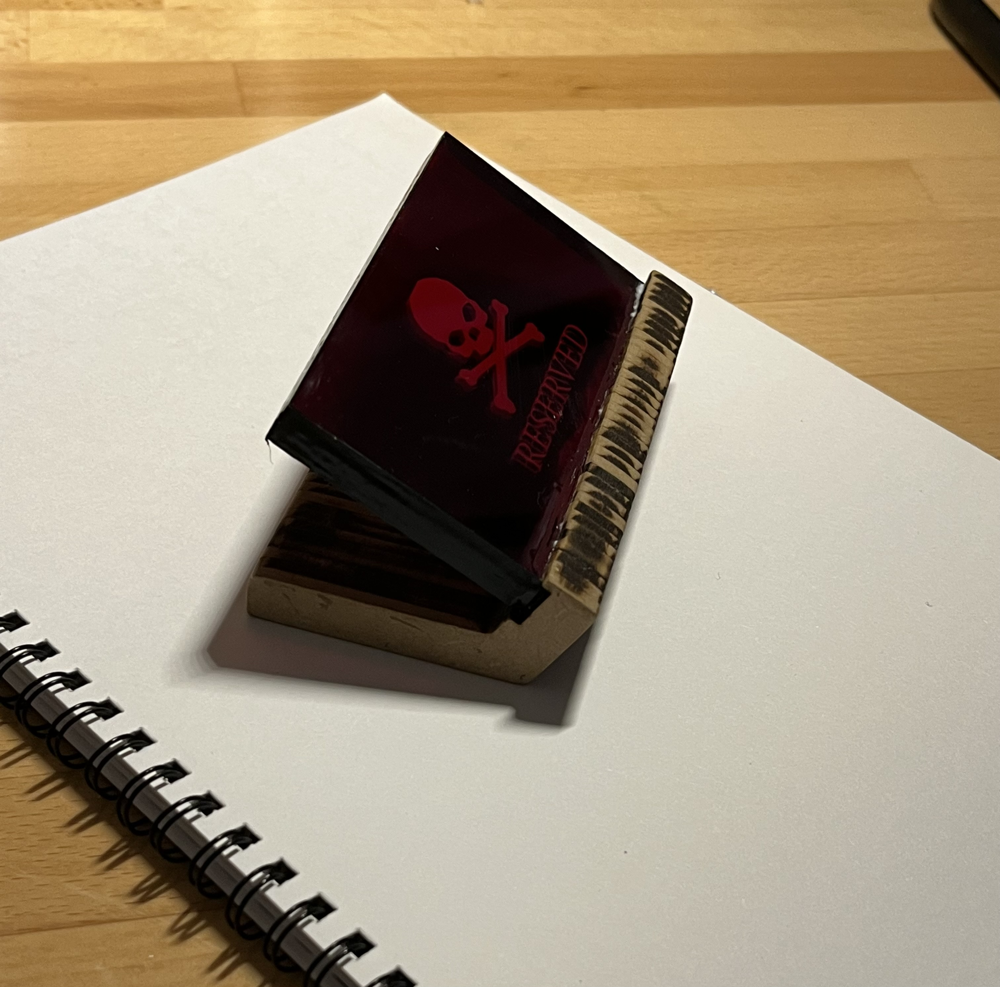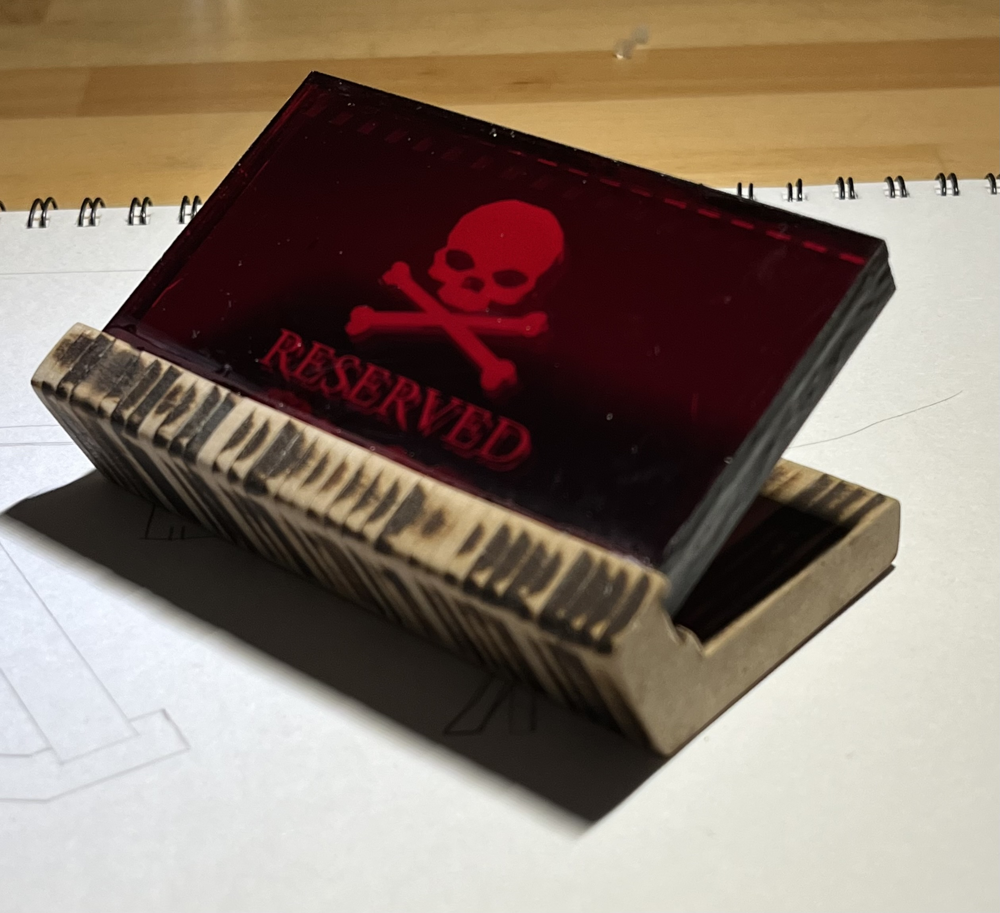
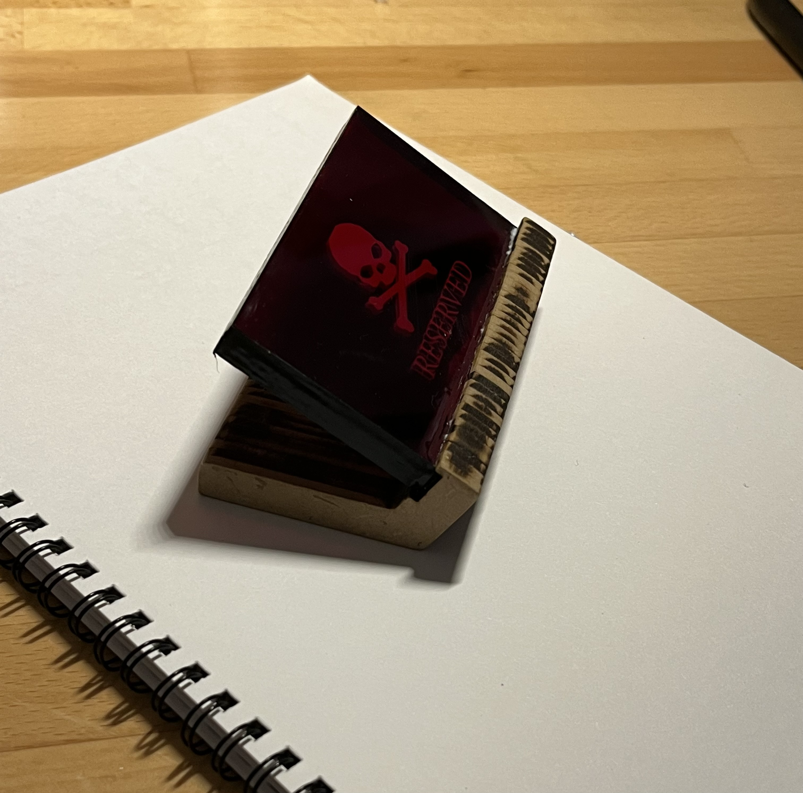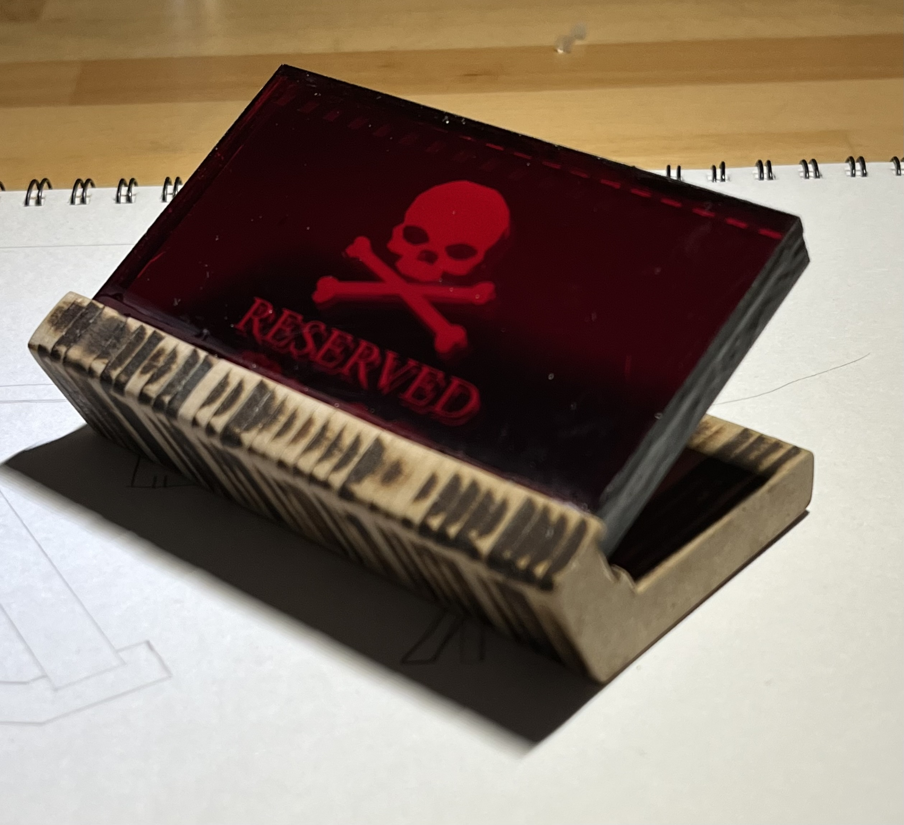3D感を出すために3枚の層にしている 1、シマシマ模様 2、骸骨 3、骸骨２枚目
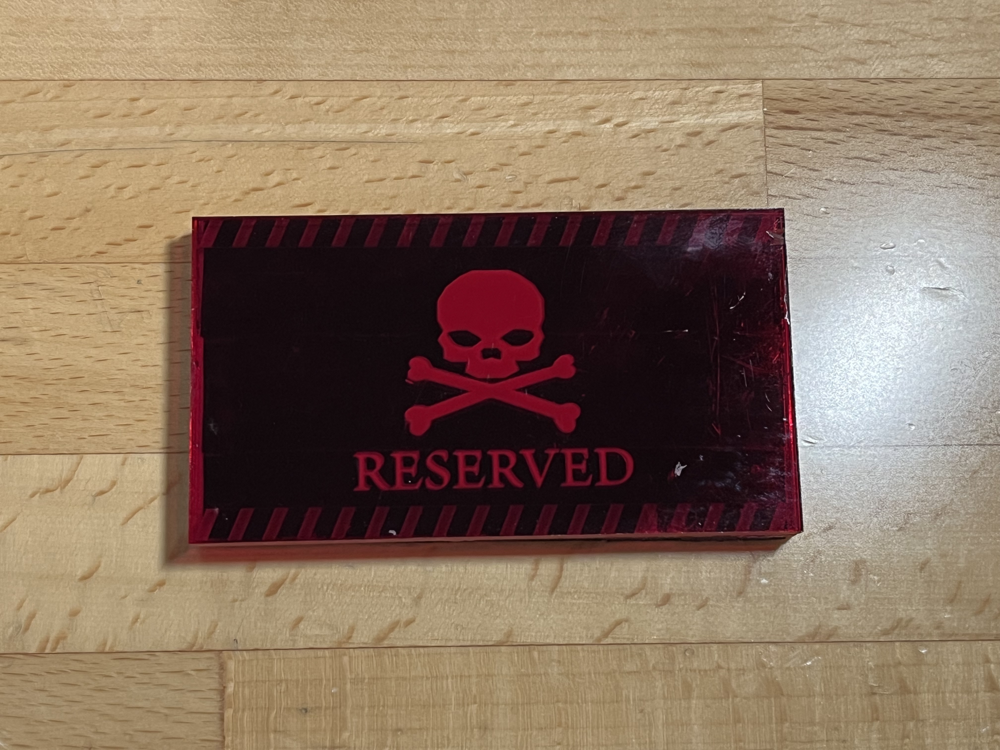
[↓使用している様子]
[スケッチの段階]
最初は、板を二枚くっつけたよくある席札をスケッチした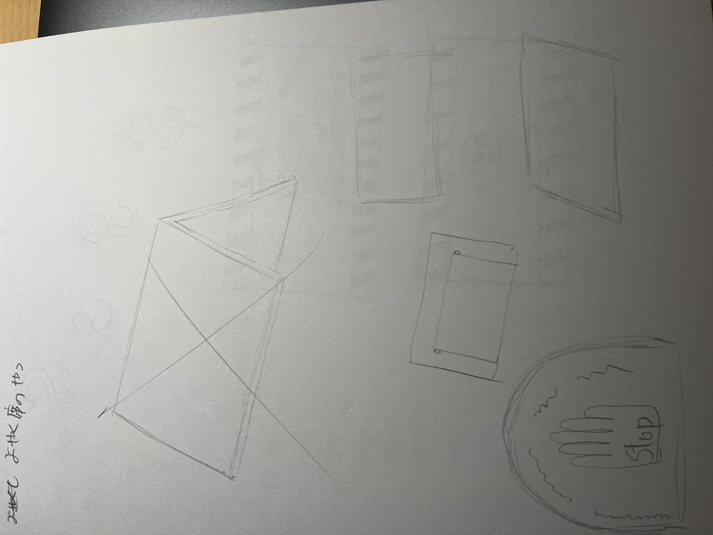
その次は席札文字などのデザインなどを考えた。
ここで取り入れたことは、荷物をどかされる事のないデザインにすること
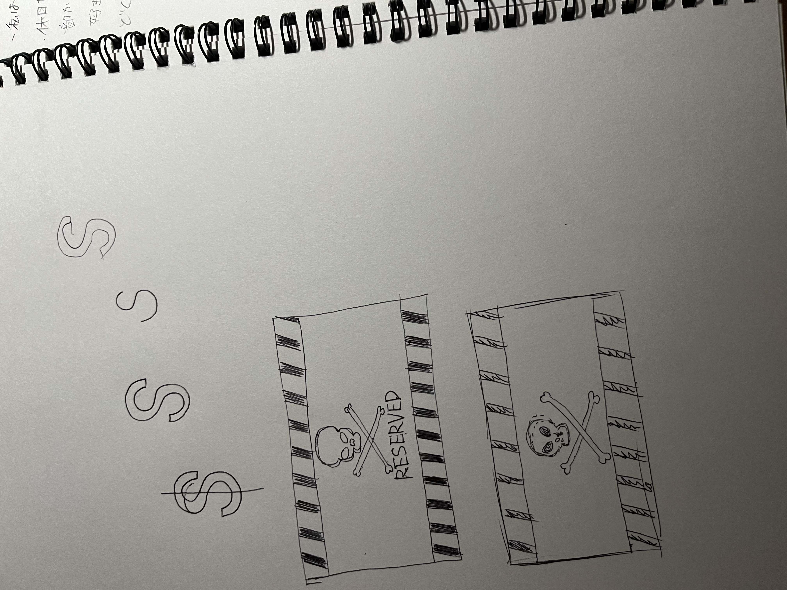
最後に文字やデザインを入れた札をどう立たせるか考えた
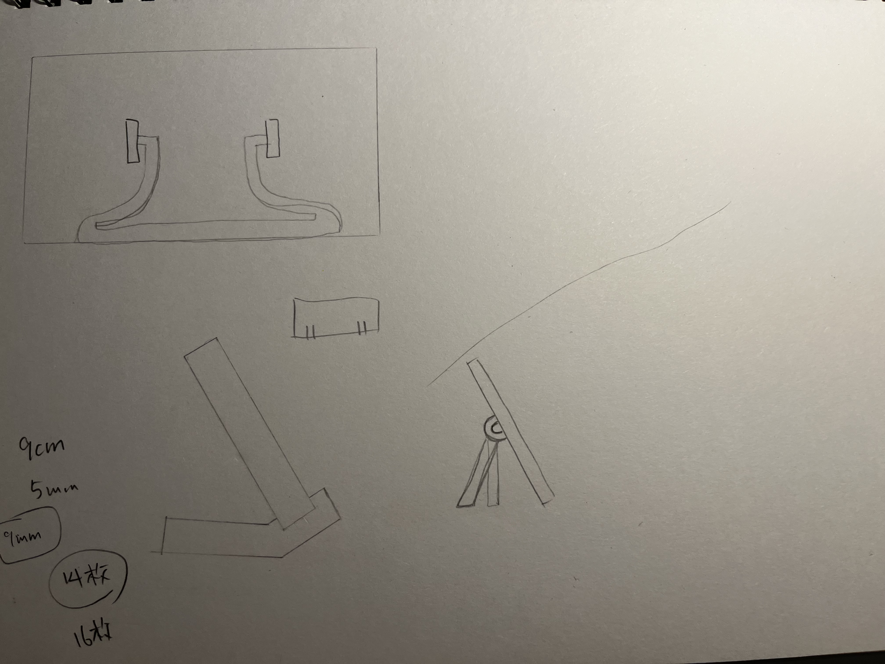
その後、形になるまでの段階
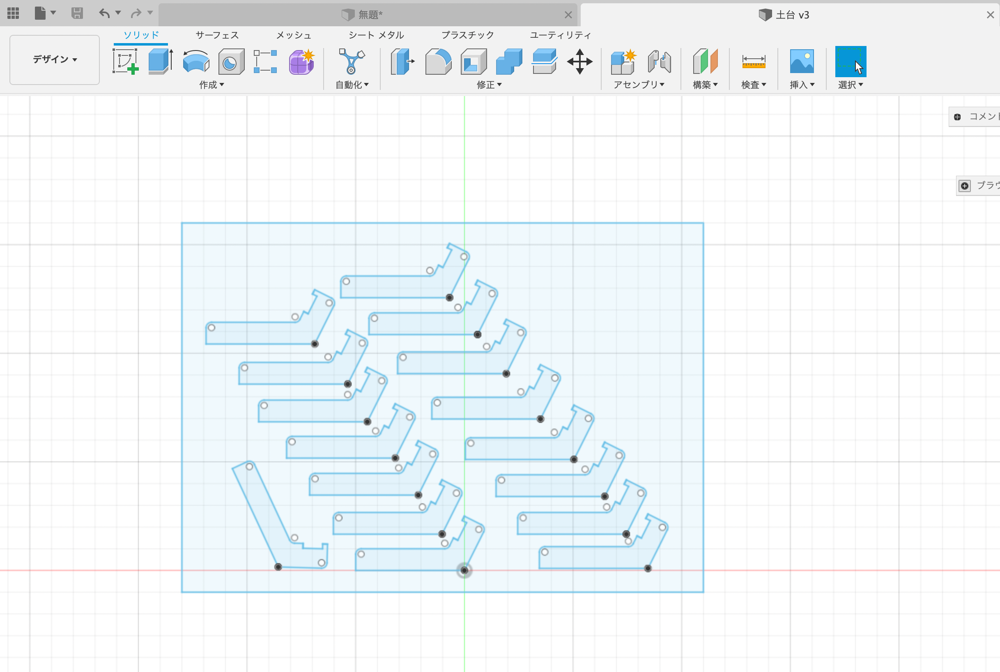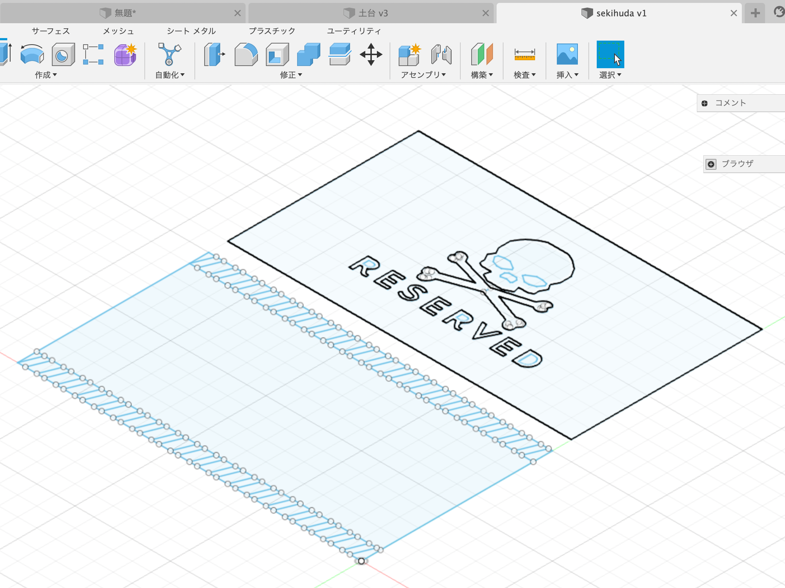
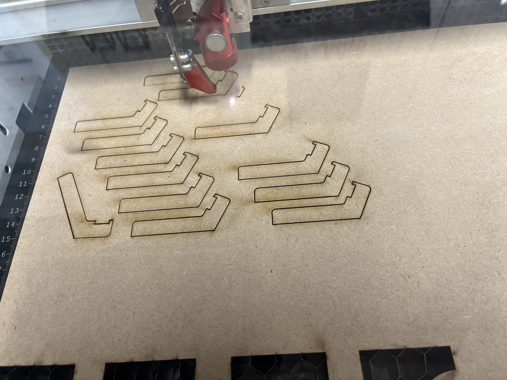 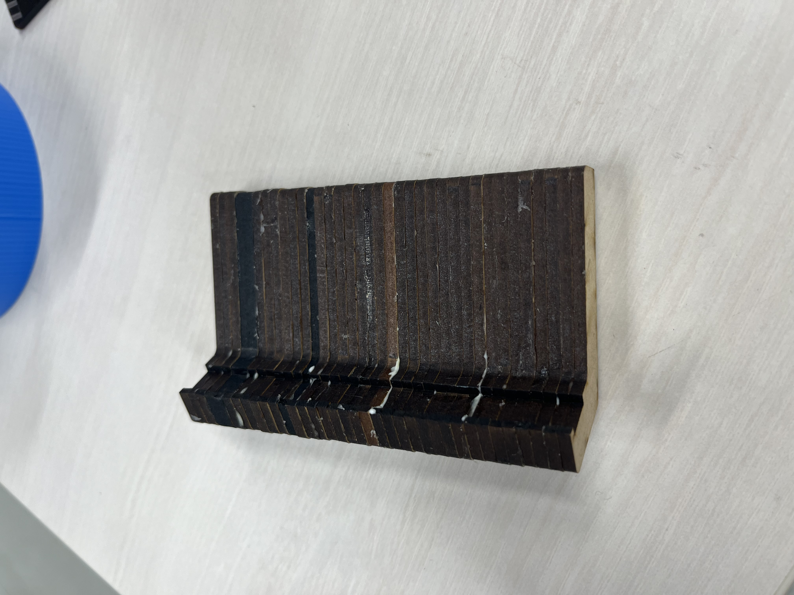